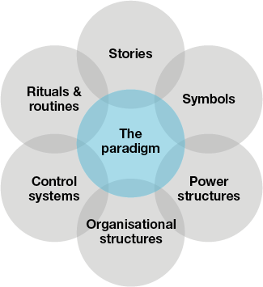
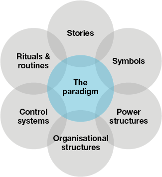

Friday, 14.09.2018
Creating the Web
The Cultural Paradigm is the core of the web. The paradigm is the core beliefs
and motivations of the organisation. It is supported by six cultural influences:
Stories: How an organisation understands and explains itself.
Rituals and Routines: The accepted norms and practices.
Symbols: Physical artefacts. The unofficial and official representations of culture.
Organisational Structures: Formal structures and hierarchy, as well as the
informal routes of power and influence.
Power Structures: The people and the systems who have the power to get things done.
Control Systems: How an organisation controls how things are done.

and motivations of the organisation. It is supported by six cultural influences:
Stories: How an organisation understands and explains itself.
Rituals and Routines: The accepted norms and practices.
Symbols: Physical artefacts. The unofficial and official representations of culture.
Organisational Structures: Formal structures and hierarchy, as well as the
informal routes of power and influence.
Power Structures: The people and the systems who have the power to get things done.
Control Systems: How an organisation controls how things are done.
